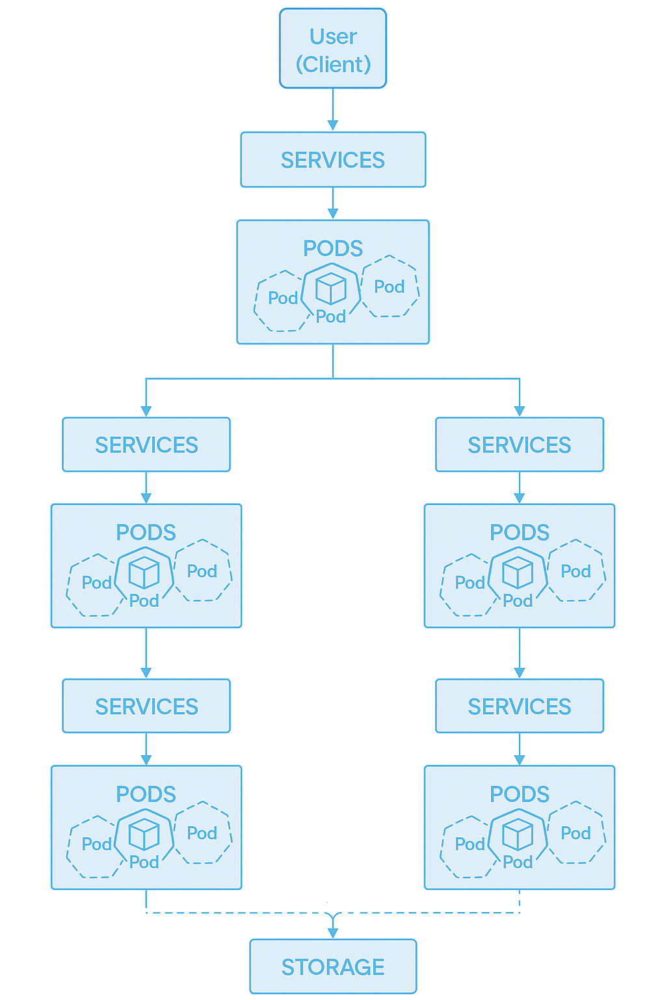
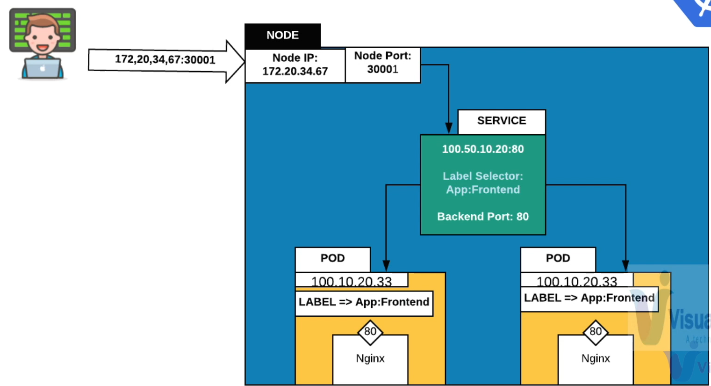
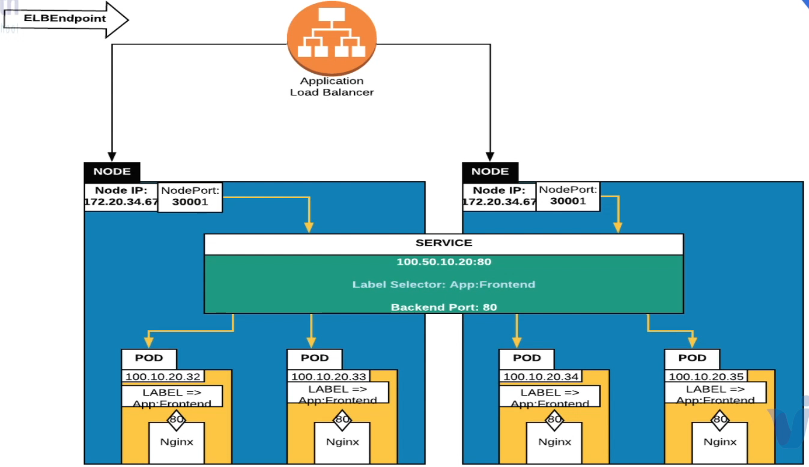
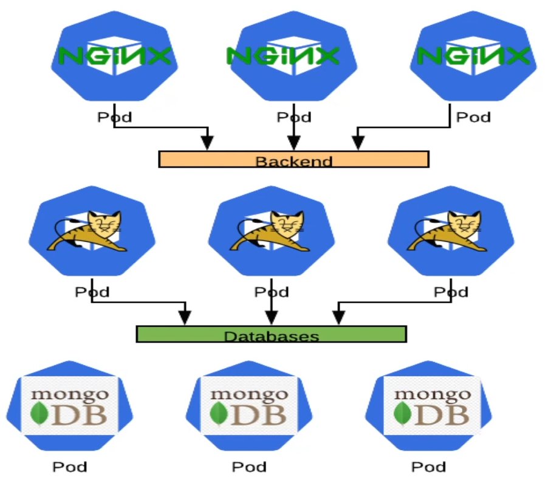
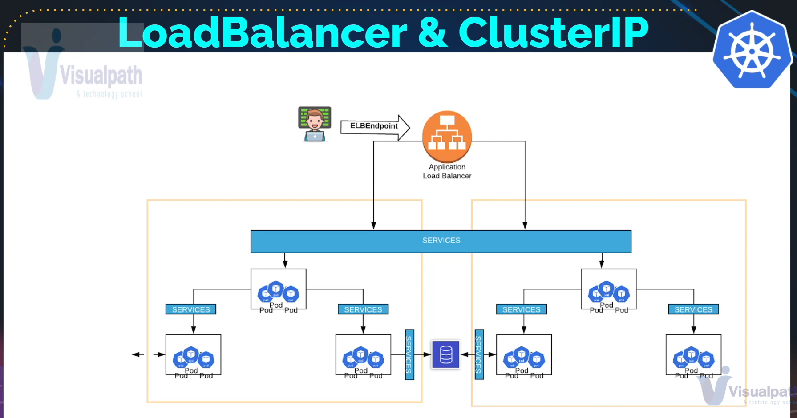
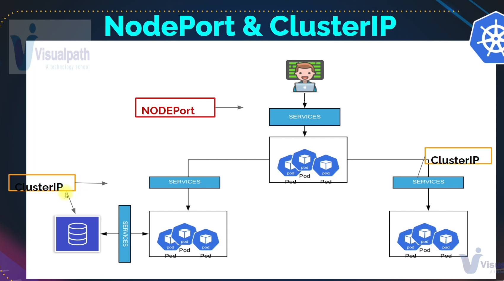

Service

Host Service In Kubernetes
- If you want to expose the application running inside a pod as a network service then you will need to host a service
- Similar to load balancers
Info
Kubernetes Pods are mortal. They are born and when they die they are not resurrected. If you use a Deployment to run your app, it can destroy and create Pods dynamically.
Each Pod gets its own IP address, however the set of Pods running in one moment in time could be different from the set of Pods running that application a moment later.
This leads to a problem: if some set of Pods(call them backenders) have functionality to other set of Pods(call them frontenders) inside your cluster, how do the frontenders find out keep track of which IP address to connect to, so that the frontend can use the backend part of the workload?
Enter Services.
Service Commands
Create
Get info
Delete
Services
NodePort
- Similar to Port mapping in Docker
- A host port and map it to a container port
- Not for production

Service example for the file service-defs.yml:
apiVersion: v1
kind: Service
name: webapp-service
spec:
type: NodePort # <-- Service
ports:
- targetPort: 80
port: 80
nodePort: 30005
protocol: TCP
selector:
app: frontend # <-- This is a Pod label
Example
Pod reference vproapppod.yaml:
apiVersion: v1
kind: Pod
metadata:
name: vproapp
labels:
app: vproapp
spec:
containers:
- name: appcontainer
image: imranvisualpath/freshtomapp:V7
ports:
- name: vproapp-port
containerPort: 8080
NodePort Service `vproapp-nodeport.yaml:
apiVersion: v1
kind: Service
metadata:
name: helloworld-service
spec:
ports:
- port: 8090
nodePort: 30001
targetPort: vproapp-port
protocol: TCP
selector:
app: vproapp
type: NodePort
output example
Output will show same ip as on endpoints config value.
To access the TomApp Application use the IP adress of either master or any worker nodes
LoadBalancer
- Expose to outside network for production usecases.

Example
Pod reference vproapppod.yaml:
apiVersion: v1
kind: Pod
metadata:
name: vproapp
labels:
app: vproapp
spec:
containers:
- name: appcontainer
image: imranvisualpath/freshtomapp:V7
ports:
- name: vproapp-port
containerPort: 8080
NodePort Service `vproapp-nodebalancer.yml:
apiVersion: v1
kind: Service
metadata:
name: helloworld-service
spec:
ports:
- port: 80
targetPort: vproapp-port
protocol: TCP
selector:
app: vproapp
type: LoadBalancer
To access the TomApp Application use the IP adress of either master or any worker nodes
ClusterIP
- Internal network communication between pods.
- Example: Tomcat connecting to MySQL
  
Example
Pod reference vproapppod.yaml:
apiVersion: v1
kind: Pod
metadata:
name: app-pod
labels:
app: backend
project: infinity
spec:
containers:
- name: tomcat-container
image: tomcat
ports:
- name: app-port
containerPort: 8080
ClusterIP Servicetom-svc-clusterip.yml: